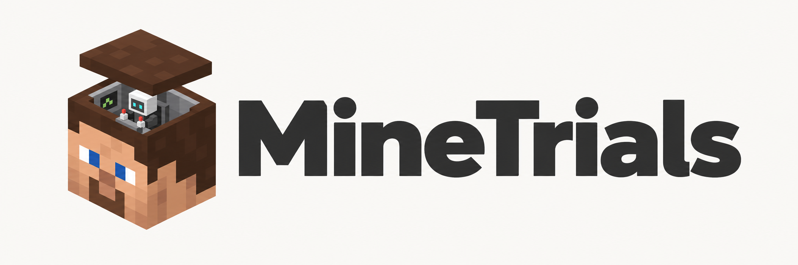

MineTrials
How far can today's agents get in an hour of Minecraft?

Introduction
MineTrials explores how effectively today’s models can play Minecraft. Specifically, how many achievements can they collect within a one-hour time limit?
The answer I arrive at is… quite a few! And Astra is really good at Minecraft.
All tested models were capable of playing with some reasonable capacity. Many were able to get diamond gear, and a few even reached the Nether. It almost astounds me that they can play at all, being such square pegs for this task.
I’m also fascinated by the importance of time in this test: both the world still running in real time and the constraint of a time limit. There’s something a bit more tangible about it to me. I like to think that METR’s work on measuring AI ability to complete long tasks was so captivating for similar reasons.
Another aspect being evaluated here is the harness. MineTrials is really a meta-harness: we plug into Codex, Claude Code, Cursor, or OpenCode, connecting them to a custom MCP server. I took this direction after initial efforts to build my own were so easily outperformed by out-of-the-box Claude Code. I wonder if there is a lesson here about building harnesses…
Astra’s best run
You can watch Astra’s best attempt below, including its occasional commentary in chat. For more details, including full traces, see the dataset on Hugging Face.
On why Astra seemed to perform so well, some thoughts: it was certainly more reliable and consistent than the other models. Even its worst run was better than the best of every other setup (20 versus 18).
On vibes, I observed it to be more adaptive and flexible. All models made a lot of errors and encountered unexpected situations throughout their runs. Astra seemed the most robust. For instance, in this run, after dying in pursuit of blaze rods, it readily abandoned that objective and took up the more peaceful pastime of fishing.
I also hypothesise that its compaction was more effective than what I believe occurred in Claude Code, which seemed to keep accumulating context within its spacious 1M-token limit.
Pareto frontier
We’re able to get some data on cost effectiveness here. At face value, the results seem consistent with OpenAI’s claims about occupying the a good share of the frontier.
Note that I couldn’t get token data for Cursor in these experiments. I was limited in resources and of course, making use of subscriptions for these runs. Thus, we're working off the traces I could get.

Conclusion
For anyone grappling with the anxieties of rapid progress in AI, I will say that spending some time playing alongside these agents can offer some temporary relief. It’s both magical and frustrating as they struggle to build a home and interact with a live (and hostile!) 3D world.
I first saw this idea two years ago on Emergent Garden’s YouTube channel. The Mindcraft project has since inspired many others to explore what language models can do in Minecraft. I also draw parallels to the original Claude Plays Pokémon and even Typeface's more timely Doomo.